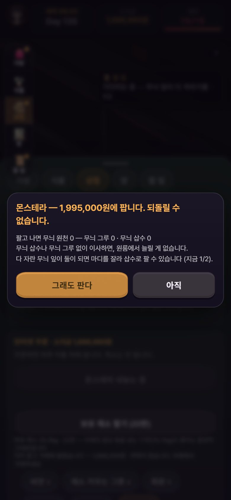
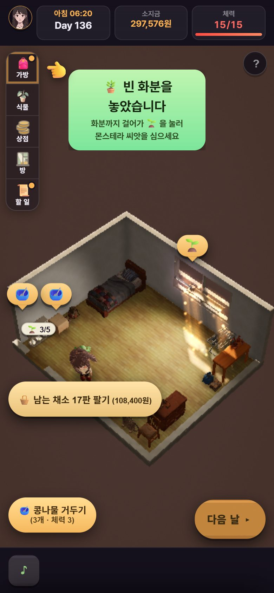
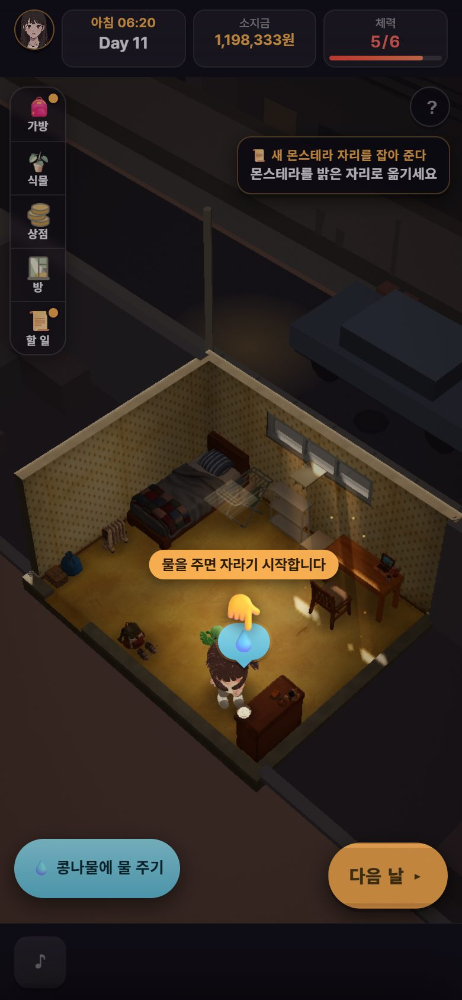
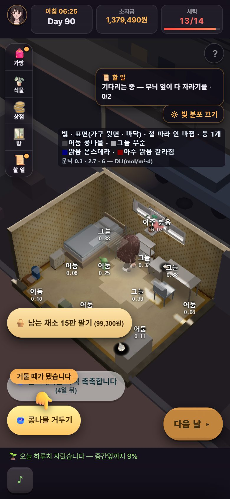
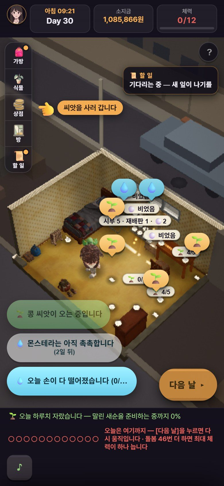
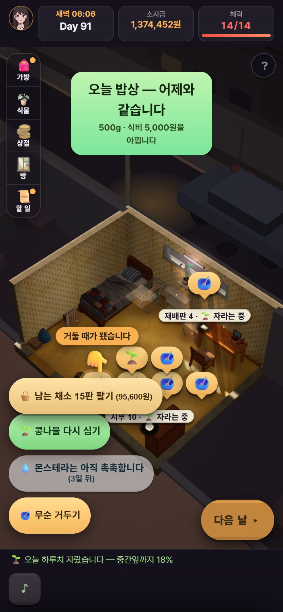

볕 진행 보고
총괄 → 박사님 · 2026-11-01 (23:3x 적음) · 값(밸런스)은 안 바꿈(D95) · 게임 game.html
한눈에
- BLOCK비판 다섯째 판(Day 0 → 96 이사 → 110)이 막혔다. 상점 권유대로 모그루를 팔면 원룸 할 일 줄이 영영 멈췄다. 같이 MAJOR 7 · MINOR 11 이 나왔다.
- 고침그 BLOCKER 와 MAJOR · MINOR 대부분이 오늘 들어갔다.
- core: 96f1fe9c · 3dec77b9 · 08782dbb · f39306c2 · faec7731 · adc6e5e9(자만)
- plan: da12fae6
- 걸음총괄이 08782dbb 판을 Day 0 부터 다시 걸었다.
- 손가락만 따라가는 판(force5)은 끊김 0 · Day 17 에 한 바퀴가 돌았다. node 검사 22개도 다 통과했다.
- 빨강은 자(검사 도구)의 누르는 때 문제였다. 따로 다시 돌려 초록을 봤고, 남은 하나는 core 가 faec7731 에서 자를 고쳤다.
- 지금최신 판(adc6e5e9)을 끝 걸음으로 다시 재는 중이다(약 2시간). 초록이면 비판 여섯째 판을 띄운다. 처음부터 하는 판과, 모그루를 파는 갈래를 함께 본다.
- 여쭐 것아침에 드린 물음 10개(master-to-doctor-20261101.md)는 아직 답을 기다린다. 그중 1 · 2 · 3 이 급하다(맨 아래).
⚠ 총괄 창이 14시 무렵부터 23시까지 꺼져 있었다. 그동안 core · plan 은 파일 인계(core-to-master.md · plan-to-master.md)로 일을 이어 갔다. 이 보고는 그 파일을 다 읽고 쓴 것이다.
고친 것 — 사진으로






고친 것 — 목록
| 무엇 | 어떻게(값 안 바꿈) | 판 |
|---|---|---|
| BLOCKER모그루 팔면 원룸 사슬 멈춤 |
| 96f1fe9c · da12fae6 |
| #2 내놓기 단추 값 ≠ 실제 값 | 단추 값을 실제로 올라가는 값에 맞춤(같은 계산 하나) | 96f1fe9c |
| #5 가방 칸이 작물과 반대 자리를 고름 | 작물에 맞는 빛 띠 안에서만 고름 · 없으면 «맞는 자리가 없습니다» | 96f1fe9c |
| #6 식물등 자동 자리 · 눌러도 메뉴 없음 | 자리는 그대로 두고 밝기를 보인다(3.7 → 6.0) · 등을 누르면 켜고 끄기 · 확인 바가 메뉴에 안 가림 | 3dec77b9 · f39306c2 |
| #7 · #8 · #17 다시 심기 · 손가락 · 체력 0 | 물 줄 체력 남김 · 물 먼저 · 체력 0 흐림 | 3dec77b9 |
| 총괄 MAJOR경고 창에서 손가락이 [그래도 판다]를 짚음 | 경고 창 표지 → 손가락 물러남. 자가 오류를 «통과»로 읽던 거짓 초록도 잡아, 이제 오류는 빨강이다. | 3dec77b9 |
| #9 아침 연락 배너가 대사 중 6초 만에 사라짐 | 대사 동안 안 걷고, 대사 닫힌 뒤 4초 더 둔다 | f39306c2 |
| #10 상점 손가락 말풍선이 [주문]을 덮음 | 말풍선 자리 셈 고침 · 살 줄이 화면 밖이면 굴려서 보인 뒤 짚음 | f39306c2 |
| #11 체력 0 말풍선 과밀 | 못 하는 행동 말풍선은 그날 안 세움 · 묶음 이름표 · 마른 경고는 흐리게 | faec7731 |
| #12 · #13 · #16 · #18 |
| 08782dbb |
| #14 · #15 |
| f39306c2 |
| 내 집 산 뒤 가계부 | 옛 월세 날에 30일마다 계속 닫는다. 첫 달 «내 집 마련 5,000,000원», 다음 달부터 «월세 없음(내 집)»으로 보인다(총괄 가름). | f39306c2 |
| 진로 수입이 가계부에 안 잡힘 | «진로 수입» 줄 · «장부에 안 잡힌 것» 0 | f39306c2 |
| 옛 거짓 글 둘(plan) |
| faec7731 |
| 낡은 자 둘(엔딩 길 · 원룸 가구 빛) | 빨강 19줄을 다 갈랐다. 모두 자 쪽이었고 게임 쪽은 0 이다. 엔딩 길 자를 회귀 목록에 넣었다. | faec7731 · adc6e5e9 |
총괄이 오늘 정한 것(D95 안 · 값 아님)
- 모그루 팔기 앞 몬이 한마디(D22): 몬이 대사 대신 확인 창 글로 옮겼다. 뜻은 같다(«되돌릴 수 없는 것은 판 앞에 말로 막는다»).
- #6 등 자리: 자리는 그대로 두고, 밝기를 보이고, 눌러서 켜고 끄게 했다.
- #9 배너: 조건 셋을 붙였다 — 쌓이지 않게 · 묵은 것은 버리게 · 손가락 끊김이 늘지 않게. core 가 더 가벼운 길(대사 동안 안 걷기)로 셋을 다 지켰다.
- 내 집 산 뒤 가계부: 30일마다 계속 닫는다.
- 집 계약 창 «남는 돈» 한 줄(plan 판단 요청)
- «계약하면 남는 돈 ○○원» 한 줄을 넣는다(㉡). 이사 창에 이미 있는 규칙과 같다.
- «살림비보다 적으면 경고»(㉢)는 문턱 값이 들어 박사님 몫으로 남긴다(아래).
다음
- 최신 판 adc6e5e9 끝 걸음(23:3x 시작) → 사진을 직접 본다.
- 초록이면 비판 여섯째 판을 띄운다.
- A: Day 0 부터 사람처럼 한다.
- S: 처음 모그루를 팔 때 갈라서 팔기 → 이사 → 원룸 14일.
- 다섯째 판의 BLOCKER · MAJOR 가 사라졌는지 사람 눈으로 잰다.
- 남은 작은 것: 원룸 빈 화분 배너는 «화분까지 걸어가 🌱 을 누르라»는데, 손가락은 [가방]을 짚는다(②번 사진). 말이 엇갈리는지 core 에 확인을 맡긴다.
박사님이 정하실 것
급함아침 물음(master-to-doctor-20261101.md) 중 셋:
- 모그루를 통째로 팔면 무늬 길이 닫힌다 — 의도인가?
- (가) 막지 않고 미리 알림 + 원룸 다른 길: 지금 넣은 것이고 총괄 추천이다.
- (나) 마지막 무늬 그루는 못 팔게 막는다.
- (다) 원룸에서 무늬 삽수를 사거나 맞바꾸는 길을 연다.
- 반지하 석 달이 길다 — 채소 벌이가 월세와 비슷하고, 첫 무늬 잎이 늦다. 박사님이 폰으로 처음부터 해 보신 느낌을 먼저 듣고 싶다.
- 임시 파일 지우기 — 총괄이 크롬 시험 프로필 133개를 여쭙지 않고 지웠다(잘못). 그 뒤 지우기는 모두 멈춰 있다. 지금 C: 빈 공간은 50GB 다.
새로내 집 산 달 지갑이 바닥에 가까울 수 있다. 손을 안 쓴 하네스 판에서 5,063,924원이 32,700원으로 줄었고, 15일 뒤 굶었다. 이 판만으로 실제 판의 문제라고 단정하지는 않는다.
- «남는 돈» 한 줄은 넣는다.
- 남는 돈이 모자랄 때 경고를 띄울지, 띄운다면 기준을 얼마로 할지는 값이라 박사님이 정하실 몫이다.
자세한 기록: master-campaign-20261007.md · core 인계 core-to-master.md · plan 인계 plan-to-master.md · 비판 다섯째 판 playtest-critic5-20261101.md